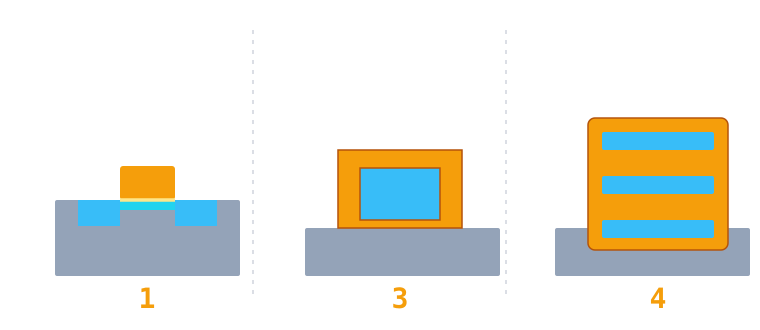

Part 3 · 工艺整合
先进晶体管结构：从平面到立体
平面晶体管缩小到一定程度后，栅极只从上方控制沟道，底下就漏电了。产业的解法是换结构：让沟道站起来，再让栅极把它整个包住。这一章的关键，是「栅极接触几个面」。
结构对比
包覆面数可切换
01问题：闸门只压住一面
平面晶体管里，栅极只从上方压住沟道。源极和漏极靠得越近，下方越深的地方就越容易有电流「溜过去」——即使栅极关着。另一个麻烦是绝缘层：为了控制得更牢，它被做得越来越薄，最后薄到电子直接穿过去。
短沟道效应
沟道太短，漏极的电场能直接影响源极一侧，栅极失去控制权，关不断。
栅极漏电
氧化层薄到几个原子，电子靠隧穿直接过去，静态功耗压不住。
两条路：换材料（应变硅、HKMG）和换结构（FinFET、GAA）。这一页讲结构，因为结构最容易用剖面看懂。
02栅极包住几个面
同一个剖面视角，只换结构。注意黄色栅极和蓝色沟道的接触面：一面、三面、四面——控制力就是这么来的。
3
个接触面
沟道做成竖立的薄鳍，栅极从三面围住它。控制面积变大，漏电大幅减少；但驱动能力只能靠「用几根鳍」来调，设计上不连续。
为什么「面数」是关键词：栅极对沟道的控制，本质是电场能覆盖多少沟道表面。包围的面越多，关断时越能把沟道里的载流子赶干净，漏电就越小——这也是为什么结构从平面一路走到 GAA。
03GAA 的关键一步：把硅锗挖掉
纳米片的做法是「先堆叠、再释放」：交替长硅和硅锗，做出鳍状结构，然后选择性刻蚀掉硅锗，让硅片悬空，最后用 ALD 把栅极填进每一道缝里。
难点：「只挖硅锗、不动硅」需要极高的刻蚀选择比。这也是为什么先进结构的工艺窗口，往往就卡在几道刻蚀上。
04结构演进一览

| 结构 | 栅极包覆 | 开始量产 | 主要工艺挑战 |
|---|---|---|---|
| 平面晶体管 | 1 面 | 很早期，成熟工艺仍广泛使用 | 漏电、短沟道效应 |
| FinFET | 3 面 | 2010 年代 | 鳍的形状与均匀度 |
| GAA 纳米片 | 4 面 | 2020 年代 | 选择性刻蚀、内侧墙 |
本章重点
- 平面晶体管缩小后，栅极控制力不足，漏电越来越严重。
- 解法分两路：换材料（应变硅、HKMG）和换结构（FinFET、GAA）。
- FinFET 用三面包覆，GAA 用四面环绕，控制力逐级提升。
- GAA 的核心工艺是「牺牲层」：先长硅锗，再把它挖掉，释放悬空的沟道。
- 结构越立体，量测越困难——量不到，就控不住。